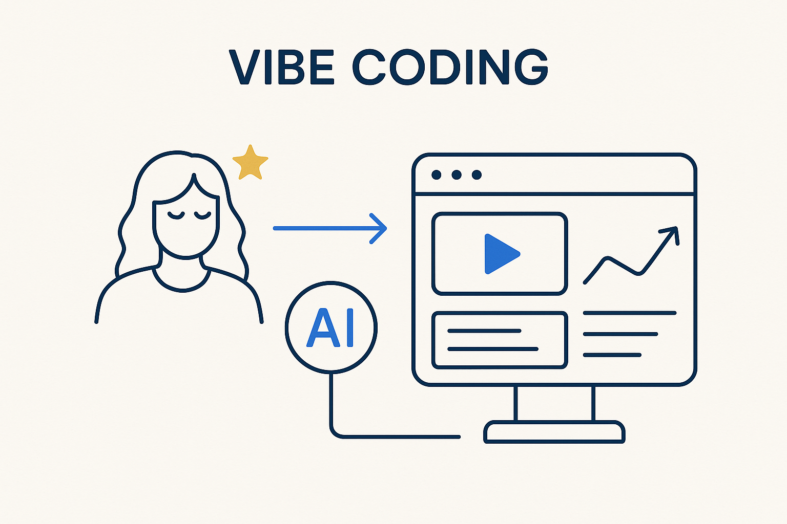

Use AI to quickly build real things — especially nice interfaces on top of the metadata — to explore, prototype and give people a way in. Great for experimenting; just don't ship the unspecified, ungated style to production.

> Use AI to quickly build real things — especially nice interfaces on top of the metadata — to explore, prototype and give people a way in. Great for experimenting; just don't ship the unspecified, ungated style to production.
Vibe coding is building software fast with AI, led more by intent and feel than by a full up-front spec — describe what you want, let the AI generate it, shape it as you go. As a way to *experiment* it is a gift: you can turn an idea into something you can actually click on in an afternoon, see whether it holds, and learn far more from a working prototype than from a document about it. It is design thinking with the build step made cheap.
A concrete, high-value use is building nice interfaces on top of the metadata. All the structure lives as metadata already; vibe coding lets you put a human-friendly face on it quickly — a cockpit, a browser, a dashboard — so stakeholders can *see* and use the model, not just read about it. The Beacon app is the example: friendly views (calendar, comms, practice, a backroom) vibe-coded over an underlying metadata and DuckDB core. The structure is the source of truth; the interface is a fast, disposable, delightful layer on top.
And here is where the past pays off. The legacy applications — the mature enterprise modeling tools people spent years in — are full of genuinely good ideas: the useful views, the workflows, the small features that actually helped. We collect those good ideas and reuse them while vibe-coding, rebuilding just the fraction that earned its place, on our own metadata, without the lock-in. Don’t reinvent what already worked — harvest the best of the old tools and vibe-code it fresh. (No need to name names.)
The one caution keeps it honest: vibe coding is for the sketchpad and the interface, not for the load-bearing pipeline. Don’t let the unspecified, ungated style become how you ship the data logic — that’s vibe-driven AI, the anti-pattern. Vibe-code the exploration and the experience; keep the core deterministic. Build loosely to learn, and let fail fast tell you which experiments deserve a proper foundation.
Where it lives: the AI & innovation layer of Breakthrough Modeling — fast building and friendly interfaces over the metadata.